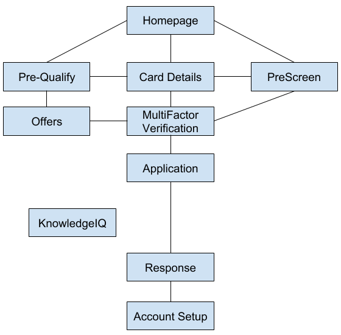

Axiom Bank
Product Designer, Front-End Developer
Purpose
Creating a credit card origination system
Research, design, and develop a safe and secure credit card application that integrates with Credit Bureaus and Core Banking Providers to make a credit decision in less than 3 minutes.
Key Contributions
Designing page architecture as well as page layout
Axiom's goal was to not only minimize the amount of time it took a potential customer to find the application, but to minimize the amount of time filling in information. I accomplished the first task by consolidating/streamlining the amount of pages in the pre-application workflow. The second task required much more user testing and competitor research to determine which stages of the application were the most problematic or confusing. This led to significant improvements in the UX and increased onboarding.
Takeaways
Details, details, details
During the creation of this website, I realized how important it is when designing a large system to make everything highly specific so that no details get lost when passing it on to a co-worker. Just because I sometimes operate on assumptions does not mean the next person will.